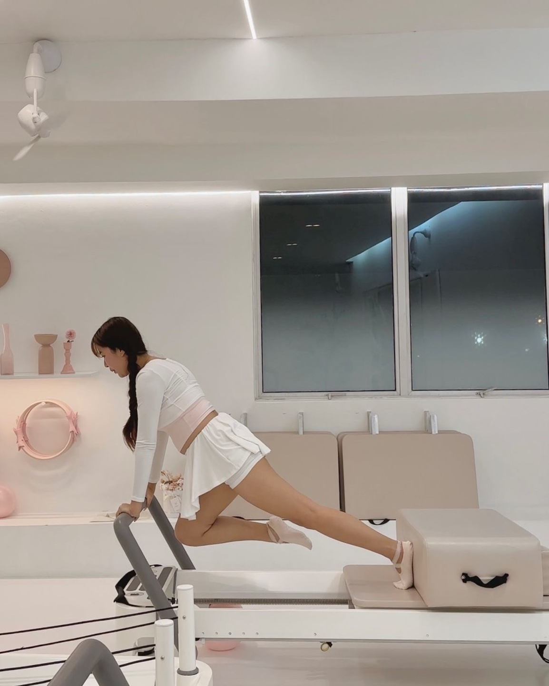

아침 운동은 하루를 활기차게 시작하는 데 도움을 줍니다.
가벼운 스트레칭이나 유산소 운동은 혈액 순환을 촉진하고 에너지를 증가시켜 하루 종일
더 활발하게 움직일 수 있게 도와줍니다. 아침 운동 후에는 가벼운 아침 식사를 챙기면
운동 효과가 더욱 높아집니다. 중요한 점은 과도한 운동은 피하고 자신의 체력에 맞는
운동을 꾸준히 하는 것입니다.
💗💬
yoon
폼롤러와 폼블럭은 운동 후 근육을 풀고,
유연성을 향상시키며, 통증을 완화하는 데 매우 유용한 도구입니다.
폼롤러는 근육을 마사지하는 효과가 있어, 특히 운동 후 굳어진
근육을 부드럽게 풀어주는데 도움을 줍니다. 폼롤러를 사용할 때는
천천히 움직이며 통증을 느끼는 부위에서 몇 초간 멈춰주는 것이 좋습니다.
폼블럭은 스트레칭할 때 지지대 역할을 하여 자세를 안정시키고,
특히 요가나 필라테스에서 유용합니다. 폼블럭을 활용하면 더 깊고
정확한 스트레칭이 가능하며, 근육의 긴장을 풀어주고 몸의 균형을
맞추는 데 도움이 됩니다. 두 도구 모두 운동 전후에 사용하면 근육의 이완과
회복을 촉진하고 부상을 예방하는 데 유리합니다.
꾸준히 사용하여 몸의 유연성 및 근력 향상에 효과를 볼 수 있습니다.
💗💬
mina
라즈베리, 복숭아, 배는 모두 다이어트와 건강에 매우 유익한 과일입니다.
라즈베리는 풍부한 식이섬유와 항산화 성분을 함유하고 있어 장 건강을 개선하고,
체중 관리에 도움이 됩니다. 또한, 비타민 C가 많아 면역력 강화와 피부 건강에 좋습니다.
복숭아는 수분 함량이 높아 체내 수분을 보충하며, 칼로리가 낮아 다이어트 식품으로 이상적입니다.
또한, 비타민 A와 C가 풍부해 피부 건강과 눈 건강에 기여합니다. 배는 식이섬유가 많아
소화를 촉진하고 변비 예방에 좋습니다. 또한, 배에 포함된 칼륨은 혈압을 낮추는 데 도움을
줄 수 있어 심혈관 건강에도 유익합니다. 이 세 가지 과일은 모두 저칼로리, 고영양식으로
다이어트와 건강 관리에 적합합니다.
💗💬
hyeon
집에서 홈트레이닝을 할 때 몇 가지 꿀팁을 참고하면 효과적인
운동을 할 수 있습니다. 첫째, 운동 전후 스트레칭을 꼭 해주세요.
근육을 풀어주고 부상을 예방하는 데 도움을 줍니다. 둘째, 작은 기구들을 활용하세요.
덤벨, 밴드, 폼롤러 같은 간단한 운동 도구는 운동 효과를 높이고 다양한 운동을
시도할 수 있게 해줍니다. 셋째, 일관성을 유지하는 것이 중요합니다.
매일 같은 시간에 운동을 정해두면 습관화가 쉬워집니다. 넷째, 유튜브나
앱을 활용해 운동 루틴을 다양화하세요. 다양한 운동을 섞어가며 하면 지루하지
않고 전신을 골고루 운동할 수 있습니다. 마지막으로, 운동 후 충분한 휴식을 취하고
물을 많이 마셔서 회복을 돕는 것이 중요합니다.
💗💬
sora
계란, 바나나, 딸기, 그릭 요거트는 다이어트와 건강에 유익한 식품입니다.
계란은 고단백, 저칼로리로 근육 유지에 좋고, 비타민 B12와 오메가-3 지방산이 심혈관 건강을 돕습니다.
바나나는 칼륨과 식이섬유가 풍부해 혈압을 조절하고 소화에 도움을 줍니다.
딸기는 비타민 C와 항산화 물질이 풍부해 면역력을 높이고 피부 건강에 좋습니다.
그릭 요거트는 단백질과 프로바이오틱스가 많아 장 건강을 개선하고, 칼슘이 뼈를 강화합니다.
이 식단은 체중 관리뿐만 아니라, 영양소가 균형 있게 포함되어 건강을 유지하는 데 유익합니다. 💪
💗💬
daniel
집에서 하는 필라테스는 공간이 적어도 쉽게 할 수 있어요.
기본 동작으로는 롤업, 플랭크, 스완 다이브, 다리 들어 올리기 등이 있습니다.
이러한 동작들은 복부, 다리, 등 근육을 강화하는 데 효과적입니다.
기구 추천으로는 필라테스 매트가 필수입니다. 매트는 바닥에서 운동할 때
몸을 보호해주고 편안하게 운동할 수 있게 도와줍니다. 또한 필라테스 링
(또는 레지스턴스 링)은 저항을 추가해 운동 효과를 높여주며, 레지스턴스
밴드는 다양한 근육 부위를 집중적으로 단련할 수 있도록 도와줍니다.
집에서 기구를 활용한 필라테스는 효율적으로 전신 운동을 할 수 있는 좋은 방법입니다.
💗💬
lisa
집에서 하는 필라테스는 공간이 적어도 쉽게 할 수 있어요.
기본 동작으로는 롤업, 플랭크, 스완 다이브, 다리 들어 올리기 등이 있습니다.
이러한 동작들은 복부, 다리, 등 근육을 강화하는 데 효과적입니다.
기구 추천으로는 필라테스 매트가 필수입니다. 매트는 바닥에서 운동할 때
몸을 보호해주고 편안하게 운동할 수 있게 도와줍니다. 또한 필라테스 링
(또는 레지스턴스 링)은 저항을 추가해 운동 효과를 높여주며, 레지스턴스
밴드는 다양한 근육 부위를 집중적으로 단련할 수 있도록 도와줍니다.
집에서 기구를 활용한 필라테스는 효율적으로 전신 운동을 할 수 있는 좋은 방법입니다. 💕

💗💬
kevin
발레 운동은 유연성, 근력, 균형 감각을 향상시키며
다이어트와 몸매 만들기에 매우 효과적입니다. 발레는 근육을 길고 슬림하게
만드는 데 도움을 주며, 특히 하체와 복부 근육을 강화하는 데 효과적입니다.
발레의 기본 동작인 플리에, 디건*, 아라베스크 등은 다리와 엉덩이를 탄탄하게 만들고,
상체 라인도 자연스럽게 정리해줍니다.
또한 발레 운동은 유산소 운동과 근력 운동을 동시에 할 수 있어 체지방을 줄이고
전신을 균형 잡히게 만들어줍니다. 발레의 반복적인 동작과 정확한 자세는 근육의 피로를 유도하고,
체중 감소와 함께 라인을 개선하는 데 큰 도움이 됩니다. 특히 발레의 긴장과 이완을 반복하는
동작은 몸을 부드럽고 유연하게 만들며, 그로 인해 부드러운 몸매를 유지할 수 있게 해줍니다.
발레는 체중 관리는 물론, 체형 개선과 균형 잡힌 몸매 만들기에도 탁월한 운동입니다.